华莱士案例解析华莱士是华与华践行企业博弈战略的最佳实践案例。从二十年前的“红高粱”开始，有很多中国快餐创业者都喊出过打败麦当劳的口号，而作为中国洋快餐的真正成功者，我们为华莱士提出的战略却是 —— 永远不与麦当劳、肯德基竞争。合作两年来，我们陪伴和见证了华莱士取得“ 2019 年全国餐饮线上销量 No . 1 ”，并且在疫情下逆势从 12000 家门店增长至 15000 家门店的好成绩。在与华莱士的合作过程中，我们以华与华品牌五年计划为蓝本，在第一年为其制定企业战略、创意品牌超级符号和品牌谚语，通过全面媒体化的技术设计全新的门店系统和包装系统，并用持续改善的技术为其提供终端管理的解决方案，实现了拳头产品近 4倍的营收增长。
第二年开始为其规划品牌营销日历，创意并执行了首届“华莱士六一吃鸡节”，活动期间发布了华莱士品牌家族角色。并同步推出的以品牌角色为原型的微信小游戏，在没有投放任何广告的情况下被玩超 100 万次，小程序新增 8 万用户，实现活动期间单日营收环比增长 140 %。
本文我们主要为你解析，华与华是如何基于企业博弈论思想，为超过 1 万家门店的快餐企业制定企业战略，并提供品牌解决方案的。学习本文，你将学到：1 、企业博弈战略：1 ）小狗策略与五力模型2 ）华莱士“全鸡&汉堡”品类战略2 、华与华品牌战略三角两翼模型：华莱士超级符号与品牌谚语【华莱士项目背景】2000 年，华莱士创始人华怀余、华怀庆两兄弟进入餐饮业，在福州开出了自己的第一家华莱士炸鸡店。由于他们当年并不了解餐饮行业，所以在产品定价、门店模式等方面都完全模仿了麦当劳，可是做了一年多生意一直没有起色。

面对经营的不利，两位创始人开始研究像麦当劳这样的国际品牌过去是如何成功的，机缘巧合中他们在一本书上看到，麦当劳创业初期是一家方便实惠的汽车餐厅小店，和他们在国内见到的门店，大不一样。正如华杉常说：“学习世界 500 强，是一个“考古学”问题，不管你要学可口可乐还是麦当劳，都要学他们第一代创始人是怎么做的，而不是他们今天在干什么，如果要学他们的今天，除非你是活腻了，想快点‘死’！”因为看到了麦当劳创业初期的样子，华莱士两位创始人开始意识到快餐的本质在于：便宜和便利。于是他们迅速调整经营策略，由大店转变为小店，开始推出 10 元 3 个汉堡等降价促销的活动，主动在 20 年前将洋快餐的价格拉低，并由此奠定了“做让人人都吃得起、品质不错的洋快餐”的经营使命。正是这一经营策略的转变，给了华莱士在巨头林立的行业中快速发展的源动力，实现了全国的扩张与发展，成为了当之无愧的“国民汉堡”。2019 年 5 月，华莱士找到华与华的时候，这家我们大多数人心目中的小企业，已经悄然在全国拥有了超过 12000 家直营门店，比国内麦当劳和肯德基的门店加起来还多，在初次会面的沟通中，他们也提出了华莱士正面临的两个困境：1 、麦当劳等行业巨头渠道下沉、价格降低，如果该趋势继续延续下去，可能会对华莱士的优势市场形成冲击，华莱士该如何与他们进行竞争？2 、由于长期以来大量的降价促销活动，导致了华莱士的品牌价值感低、消费者信任感低，该怎么提升品牌？
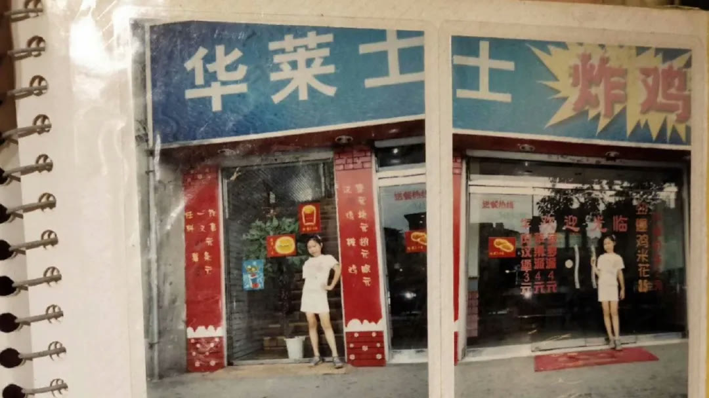
这两个问题也成了我们合作需要解决的主要课题。接下来，一起来看看华与华是如何具体为华莱士解决这两个课题的。
1什么是竞争？竞争不是为了打败对手，而是为了赢得利润当我们在谈论企业发展方向、企业战略的时候，往往离不开“竞争”这个词，这是商业界谈论最广泛的词语之一。然而每个人对它的解释和定义其实都各不相同，有的人认为竞争是打败对手，有的人认为竞争是抢到顾客，还有人认为竞争是争做最好，是竞技运动式的胜者为王。但是华与华并不这么看待企业间的关系，也不这么看待“竞争”这个词。
很多人热衷于将商业竞争比喻成战争或者是体育运动，是因为这样比喻很吸引人，然而这个比喻具有误导性，战争是零和竞争，只有一个赢家。“零和竞争”是一种此消彼长、竞相杀价的恶性竞争。在这种情况下一方的收益必然意味着另一方的损失，各方的收益和损失相加的总和永远为零，双方不存在合作的可能。但其实在现实生活中的商业环境并不是这样。商业竞争应该是“正和博弈”，博弈双方在整个过程中的利益都有可能增加，或者至少一方的利益增加，不一定会损害另一方的利益，因而整个大盘（社会）的利益将有所增加。再或者说，我们只关心服务好自己的顾客和自己的生存问题，不关心所谓“竞争对手”，“同行”是一种假设，“竞争对手”是一种幻觉。
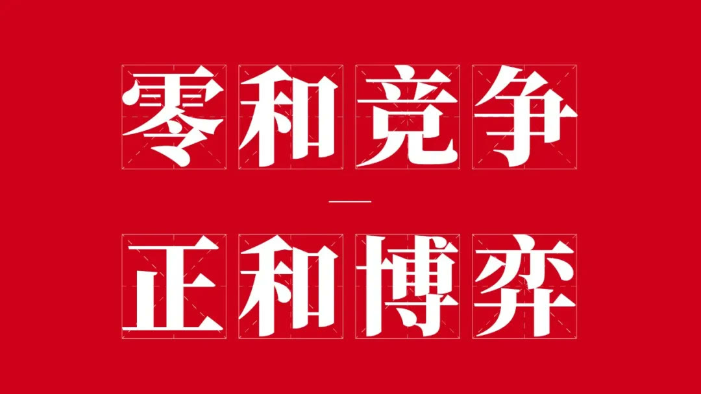
世界竞争战略之父迈克尔·波特也强调，在企业经营的竞争中要着眼于突出特色（购买理由）和创造更多的价值，这是企业持续盈利的关键。我们可以把这种竞争理念用演艺界来比喻，演艺界里可以同时存在很多优秀的演员或者歌手，每一个人都以自己的方式创造价值，每个人都能发掘并创造特定的观众，表演者越多、观众越多，演艺界也就越繁荣，这种价值创造就是正和博弈的本质体现。基于这种思想，华与华认为，不要说“竞争”，要说“博弈”。一切始终服务于最终目的，不要竞争论，要博弈论。竞争不是为了打败对手，而是为了赢得利润。博弈，就是谋求自己的利益，而与其他的博弈参与方求得“纳什均衡”，形成一个“井水不犯河水”的稳定格局，就是“你玩你的，我玩我的”。“纳什均衡”是《博弈论》里的一个重要术语：在一个博弈过程中，无论对方的策略选择如何，当事人一方都会选择某个确定的策略（往往是最优），该策略被称作占优策略，纳什均衡就是基于双方的占优策略，而形成的对于双方来说最稳定、最有可能产生的结果。
所以企业博弈战略就是以赢得利润为目的而制定的企业战略，不以打败谁为追求，而是与其他的博弈参与方求得“纳什均衡”，只盯着自己的生存和服务顾客。这是我们思考华莱士企业战略的前提，也是我们希望客户在面对麦当劳等行业巨头的潜在威胁时做出的第一反应。麦当劳等行业巨头渠道下沉、价格降低是一个客观发生的事实，不仅如此外卖平台的崛起似乎也在稀释华莱士的渠道优势，那么对于华莱士来讲，是否就意味着需要改变经营策略与他们展开正面竞争呢？
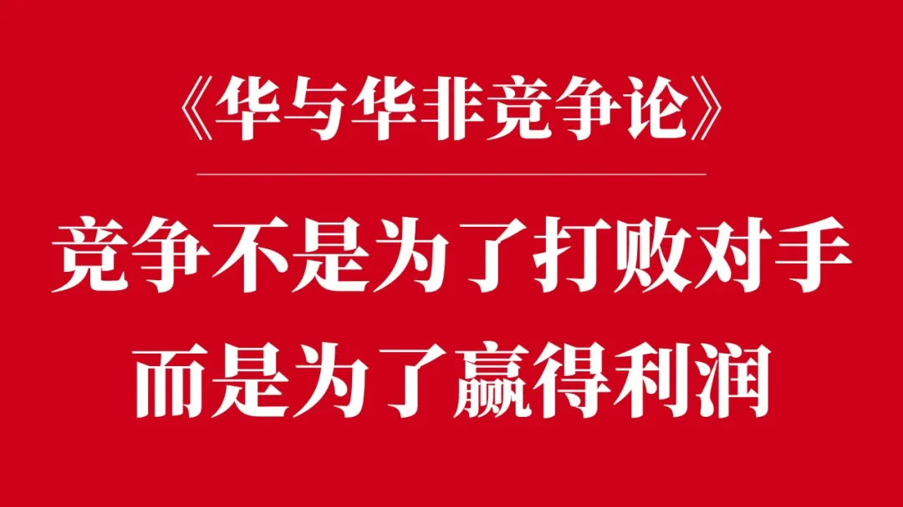
2
为华莱士制定企业博弈战略创造独特价值，保持总成本领先以“小狗策略”系统规划华莱士营销 4P通过对华莱士企业发展史的系统梳理，我们发现华莱士过去的成功主要得益于两个创新。一个是产品的创新：开发出了一个与麦当劳完全不同的门店经营模式（产品、价格、渠道、推广都不同）。第二个是组织的创新：与麦当劳的特许经营制不同，华莱士采用员工合伙制的直营模式，为快速发展奠定了组织管理基础，降低了内部交易成本。
这两个创新背后的所有动作形成了一整套独特的经营活动，并最终让华莱士在巨头林立的行业里做到了“总成本领先”。我们认为做任何决策都要放到 100 年的时间维度里去看，与其追逐不断变化的市场风口，更应该坚持不会变化的本质，而华莱士要坚守的本质就是“便宜”与“便利”。基于这两个核心要素，我们认为华莱士的两个创新就是企业应该坚持的瑰宝。其次，在面对麦当劳等行业巨头的潜在威胁时，想要保持并扩大自身优势，践行《博弈论》中的“小狗策略”是最佳选择。“小狗策略”被誉为小企业与大企业共存的关键秘密，是指小企业在大企业的阴影下发展壮大并与之共存的时候，尤其要避免成为大公司的目标敌人，不要引发大公司的攻击，要确保自己对大公司没有威胁，只是开拓出自己的生存空间。

在世界范围内践行小狗策略最为成功的企业是美国西南航空公司，他们通过“聚焦短程航线”、“提高设备利用率”、“简化服务”等一系列独特的经营活动实现了在各航空业巨头经营的领域里快速发展与成功。
值得一提的是美国西南航空公司成功之后并没有改变自身去做“大航空公司”做的事，而是继续保持和改善自身独特的经营活动近 50 年，所以它从 1973 年开始每年都盈利，并且市值大于美国其他航空公司之和。其实不管西南航空多么强大，他都不会进入美联航等大航空公司的业务领域，因为这样就打破了纳什均衡，破坏了与他们之间的稳定博弈格局，他在美联航们的碗里挖出的食物是美联航们必须忍受的，因为在他的领域，只有他做到了总成本领先，更何况西南航空也挖走了灰狗巴士的奶酪，这是企业竞争战略的另一个策略，叫做替代者策略。那么说回华莱士，通过对华莱士企业的梳理，我们用营销 4P 来总结华莱士需要践行的“小狗策略”：①定价策略：保持低价，不要提价与麦当劳等巨头形成正面冲突根据《 2019 小吃快餐品牌价格带金字塔》的研究我们发现，除了麦当劳、肯德基、汉堡王 3 家国际汉堡品牌是位于 30 元的价格带，大部分新进入中国市场的汉堡品牌均采用高价策略，例如 Habit 为 48 元、 Shake Shack 更是高达 87 元。
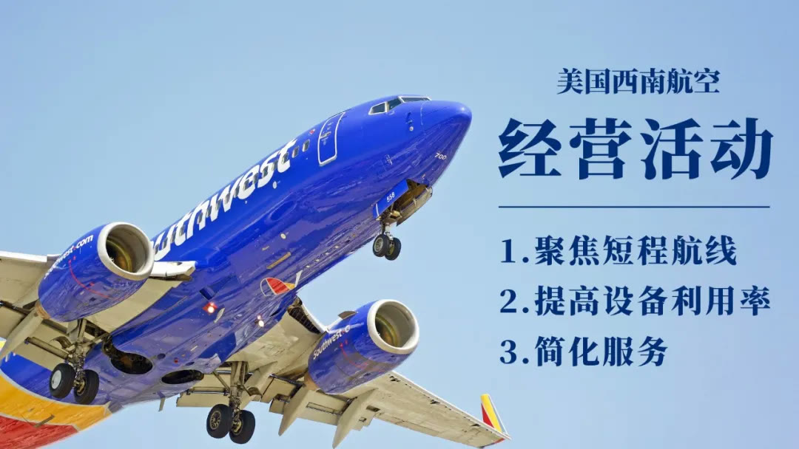
而和我们同处 20 元价格带的品牌，除了以鸡排为主的正新鸡排等以外，几乎都是地域性的小品牌或夫妻老婆店，由于我们的大部分产品和“麦肯”是一样、或同级别的供应商，所以产品品质相较于小品牌更有保障和竞争力。②渠道策略：加大渠道密度，继续深耕三四线城市市场基于我们的定价策略，三四线城市和下沉市场的街边店仍然是我们的核心渠道之一，虽然外卖平台的崛起对我们形成了一定的压力，但是便利性才是快餐服务的最终目的，只要继续加强渠道密度，外卖对我们的影响就会逐渐减小。因为外卖趋势加强→外卖专门店增多→选择商铺的品牌减少→租金降低，最终我们就可以开设更多的门店。③产品策略：继续降低单店投资与经营结构，加强规模优势麦当劳、肯德基等品牌聚焦商圈大店，以产生强大的品牌势能为目的，所以过去他们的标准店铺面积普遍以 250 ㎡以上的大店为主，麦当劳的标准厨房面积更是高达 70㎡。由于厨房面积大、设备多，因此对于油烟排风等物业要求就会很高，大型商圈尚且能够满足，但是能满足麦当劳的街道物业就相对较少。另一方面，由于门店面积大、设备多、房租高等因素，因此麦肯的单店投资成本也比较高，根据相关资料，麦当劳单店总投入 200 万元左右、肯德基更是高达 400 万元。作为特许经营制的加盟品牌，无形中对其扩张速度形成了一定的限制。
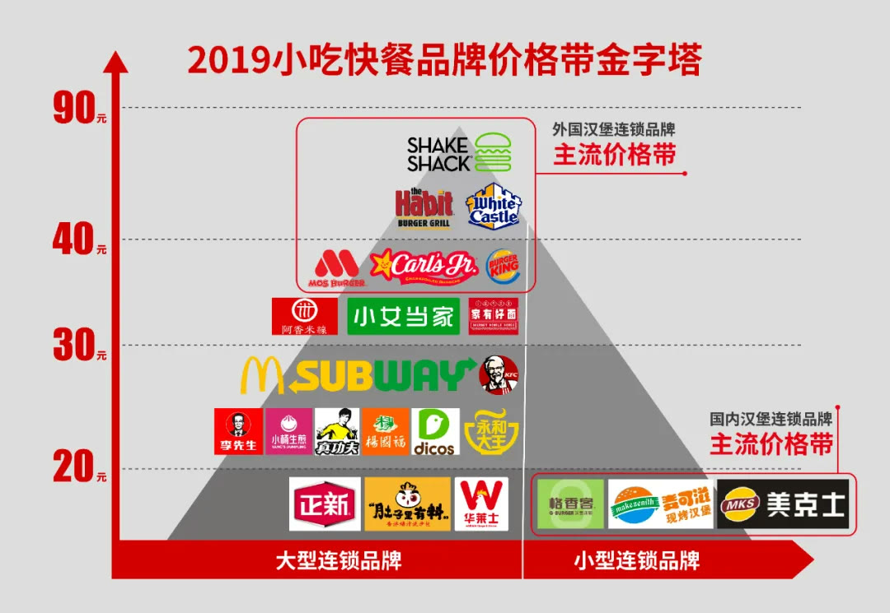
而基于我们的定价和渠道策略，我们可以继续保持 50 ㎡的小店模式，并通过自建物流系统、供应链管理、联合店长等独特的经营活动，持续降低单店的投资与经营成本，这样其创新的员工合伙制度，就会为规模化插上一双快速发展的翅膀。
④推广策略：不打大广告，将营销费用让利给消费者在生活中随处可见麦肯等品牌的电视广告、户外广告，那些广告大多制作与投放费用较高，对于我们来讲不必盲目模仿，因为我们在线下拥有超 15000 家的门店，所以门店本身才是我们最大和最重要的自媒体，而且是低成本、 100 %触达的优质广告媒介。羊毛出在羊身上，减少不必要的大广告支出，才能更好的维护我们的低价策略。以上 4 点是我们为华莱士明确“小狗策略”的部分关键动作，也就是说面对麦当劳等行业巨头的潜在威胁，我们选择不竞争，并且避免竞争，只盯着自己、盯着“便宜”和“便利”。这是两个层面的事情，第一个层面“保持微利”，做一家追求利润最小化的企业，让消费者花同样的钱，吃得更好；第二个层面“保持便利”，继续开店，继续加大渠道的密度，未来让喜欢吃汉堡炸鸡快餐的消费者，买我们的产品就像在便利店买水一样方便。五力博弈思维，建立全鸡&汉堡新品类当我们明确了华莱士首先应该践行“小狗策略”后，进一步我们也需要为华莱士在巨头渠道下沉的现状中发掘更多独特的经营活动，帮助华莱士避免正面竞争，赢得更好的发展机会。企业博弈战略的目标是找到企业在产业结构中的博弈关系，并根据博弈关系寻找机会点，帮助企业创造更多的价值，从而赢得利润。

那什么是产业结构呢？我们可以用迈克尔波特五力模型来解释，一个企业为了赢得利润，实际上与多方在进行博弈：
1 ）企业与下游顾客进行博弈：因为顾客总是希望付出更少而获得更多；2 ）企业与上游供应商进行博弈：因为上游供应商总是希望卖更少的货、赚更多的钱；3 ）企业与新进入者进行博弈：因为当市场容量趋于稳定时，新进入者的出现会加大企业的经营难度，并且他们往往带有新的技术或创新，威胁性强。4 ）企业与现有的竞争对手进行博弈：因为其他企业有时会主动与我们发起“零和竞争”，比如最恶劣的竞争 — 价格战，不仅影响我们的经营，最终还会危害到行业的整体营利性。5 ) 企业与潜在的替代品进行博弈：替代品往往不是现在我们所处行业的企业，他们总是跨界而来，对企业威胁性极高（比如数码相机替代了胶卷、手机替代了数码相机）
这也是为什么我们不能只盯着竞争对手的原因，因为竞争对手只代表了 20 %，是五力中的一个而已，是狭隘的竞争导向思维。所以制定企业战略的起手式，是博弈思维。就是研究企业所在的产业结构中各方的博弈关系，并从中找到能够创造更多价值的环节，并寻求一个纳什均衡。过去华莱士、麦当劳、肯德基三家企业形成了对鸡肉分割品的巨大采购需求，而这样级别的采购需求，反而导致我们在推广某一产品时容易遇到两个极端的情况：
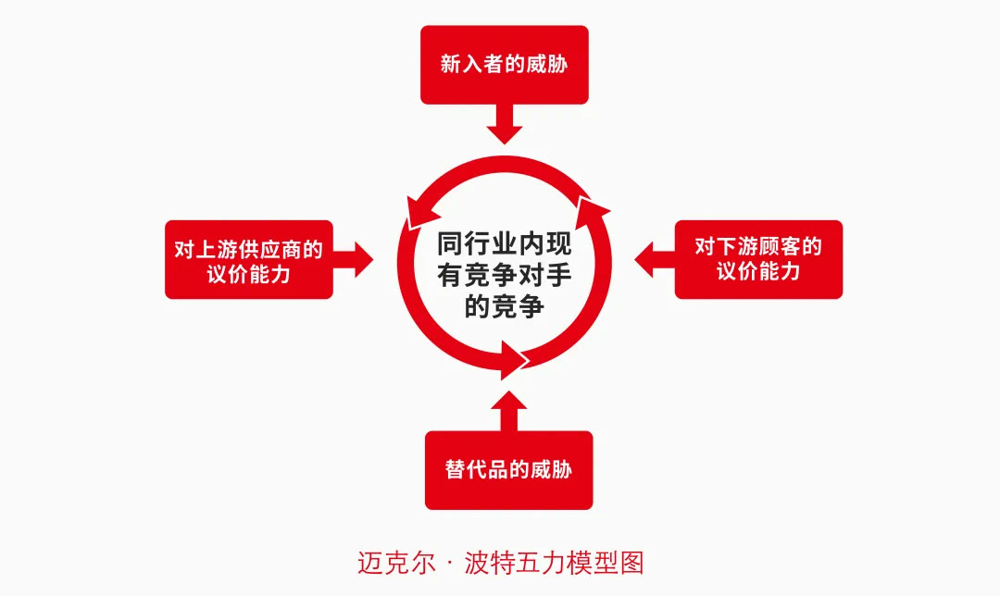
一是所选产品总供应量无法满足全国门店的长期销售或爆发式增长；二是与麦当劳等品牌采购相同的原材料，如果撞期就等于市场需求暴增，容易导致采购成本整体上涨。麦当劳、肯德基也一样面临这种情况，所以对于华莱士来说，在整个产业结构当中与上游供应商的关系，是企业产品的生命线。根据我们的研究，我们发现中国白羽鸡鸡肉市场正在发生根本性的变化，供应商的议价能力正在逐渐变强，并且由于国内鸡肉养殖企业不掌握白羽鸡的纯系原种鸡，在产业链中只承担养殖的角色，所以引种数量直接决定了供给数量，而数据表明引种数量从 2014 年开始大幅度降低。因此我们可以合理的预见，由于我们和麦当劳等行业巨头都对鸡肉分割品有巨大需求，所以供需的变化必然导致我们上文中所说的两个极端情况，而这种情况的发生，会同时影响到我们和麦当劳等行业伙伴的整体营利性。福特汽车创始人亨利·福特曾经说过这样一句话：“不管顾客需要什么颜色的车，我的都是黑色的。”
这句话的意思可以被理解为“营销就是大量销售我们最能生产的东西”，也是基于这样的思想，在对华莱士上游产品供应链进行了系统的梳理后，我们最终锁定在了“全鸡”这个产品品类上。大家可以设想一下，如果你是养殖户，你是愿意直接将一整只鸡卖给对方，还是愿意分割后分别找到、并卖给不同的人？
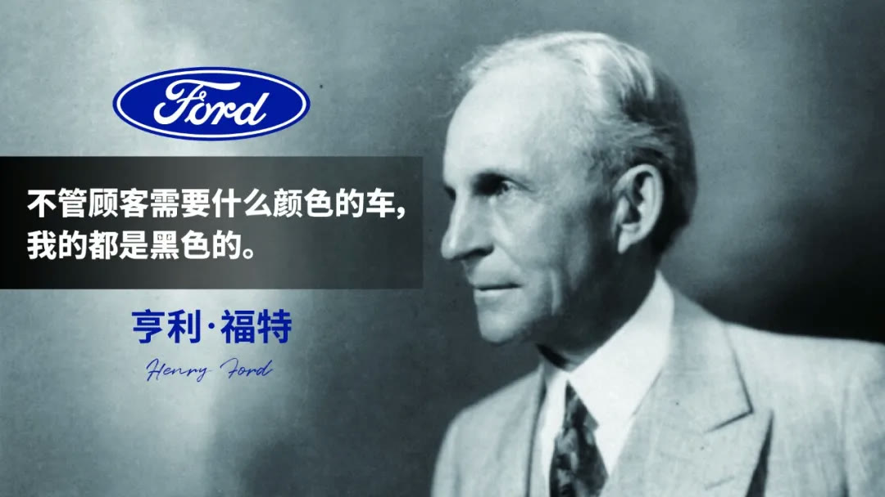
而且在研究华莱士企业基因时，我们也发现华莱士有“全鸡”的基因：1 ）华莱士有 20 年经验积累下的全鸡产品供应体系；2 ） 2002 年华莱士首创的蜜汁手扒鸡，畅销 18 年，每天卖出 16 万只，与麦肯相比，我们更懂中国人喜欢怎么吃全鸡；3 ）华莱士全鸡产品，熟客口碑 No . 1 ，好吃不贵不麻烦、比在家做还划算！因此我们认为全鸡对于华莱士来讲是最有可能为顾客、为自己创造巨大价值的新品类。另一方面麦当劳、肯德基等主要行业伙伴缺少或未重视该品类的产品，也便于我们建立新品类的认知，这也是我们践行小狗策略的重要动作之一。
而且从博弈的角度来看，由于彼此产品采购量都巨大，所以麦当劳等行业巨头也不会主动选择售卖全鸡而在供应链端与我们形成直接冲突，因为供需变化导致的成本上涨是大家都不愿意看到的情况，这种产品选择与采购的“默契”，就是博弈论中常说的“纳什均衡”。这个战略决策就回答了近期营销圈热议的问题：“为什么麦当劳做牛肉、肯德基做鸡肉、华莱士做全鸡？”这不仅是基于每家企业供应链的优势，更是企业间博弈的一种均衡，因为这么做对彼此来说都是一种占优策略，长远来看都可以获得更多的利润。
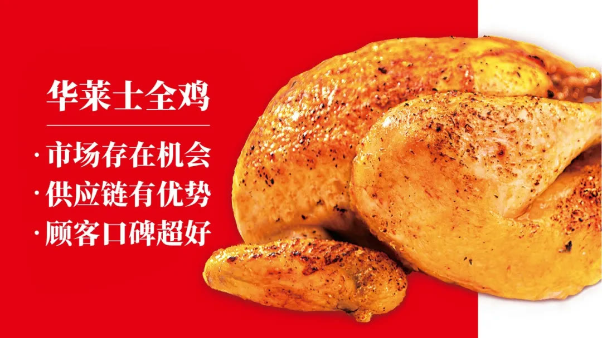
我们用“小狗策略”和“全鸡&汉堡”的品类策略，打破了“零和竞争”的思维僵局，与产业内的其他博弈方寻找到了一个“纳什均衡”，为行业、消费者都创造了更多价值，并让华莱士从中获得了更多的市场和利润。
3建立华莱士品牌“三角两翼”提升品牌价值感与信任感在华与华，我们有一个事业理论，叫做“所有的事都是一件事”，也就是战略创意一体化，所有的战略价值与意图在品牌端也必须同步构建和传播。根据“华与华品牌三角两翼模型”，我们认为品牌就是产品的牌子，建立品牌就是建立企业的产品结构、话语体系和符号系统。

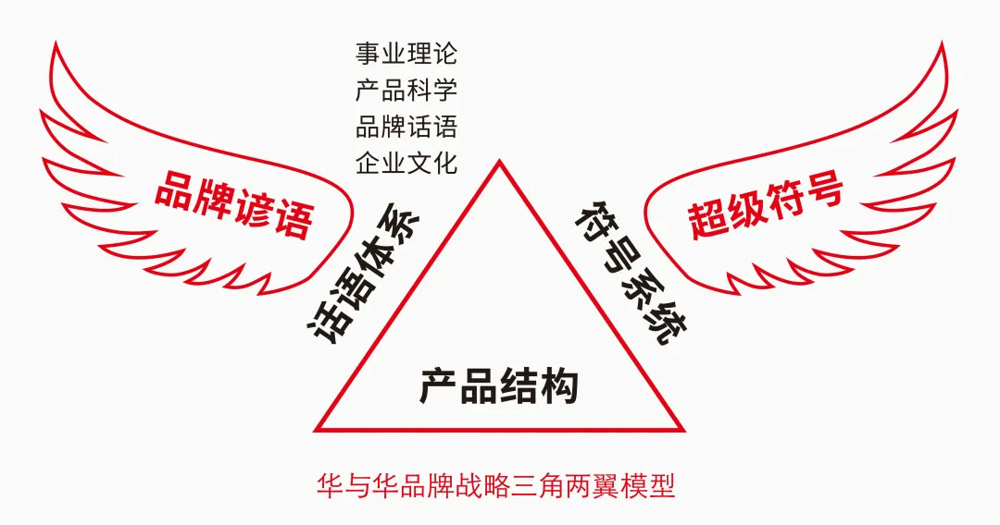
在明确华莱士的品类策略后，我们就着手解决华莱士品牌传播策略，解决华莱士品牌缺乏价值感与信任感的问题。建立话语体系打破与消费者的信息不对称我们首先找到的一个价值点就是“全国门店一万家”，规模感创造出一种事实感、信任感。过去许多消费者以为华莱士只是开在小城市的小店、小品牌，极少有人认为它是一个规模巨大的全国品牌，通过对这一信息的传播，就能够很自然的传递出企业的规模和实力，成为建立信任感的钥匙。我们曾经在高层访谈期间问起过消费者关于产品品质的质疑，客户往往都是叹口气说“哎，我们的供应商都是国际、国内顶尖的，很多产品和麦当劳肯德基是一样的供应商，产品品质真的很好，但是消费者不知道啊！”我们以前也不知道，但是客户讲过之后就知道了，那么我们该怎么办呢？就是把客户讲给我们听的这些话，原模原样的讲给消费者听！
除了门店规模、合作伙伴以外，我们还对华莱士的食材品质、食材采购标准等相关信息进行了提炼，梳理出一份华莱士的企业履历表用于传播。华莱士的食品品质其实和麦当劳、肯德基等大牌一样，之所以价格比较低是因为门店的投资成本低，房租、人力等经营成本低，而且没有巨额的营销广告费用，又在行业内做到了总成本领先。
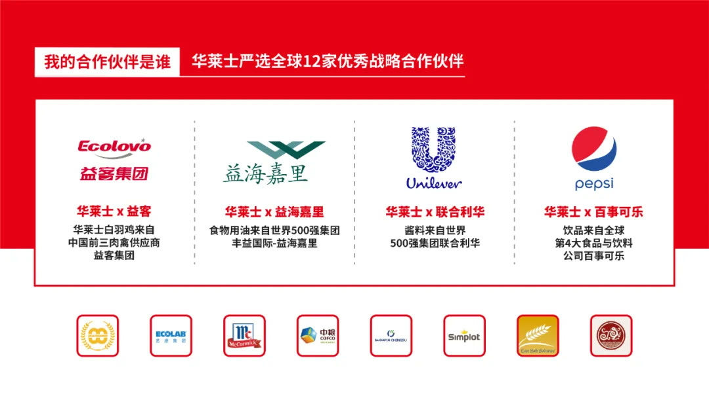
最后，基于“全鸡&汉堡”的品类策略、基于让所有人都不用花太多钱就能吃好的平价策略，我们也为华莱士创意了“全鸡配汉堡，华莱士吃好”的品牌谚语。
我们期望能够通过这句话，让越来越多的消费者记住华莱士、传播华莱士，进而越来越不假思索的去吃华莱士。一个品牌就是一个符号系统，为华莱士创作全球超级符号品牌符号的本质目的在于降低识别和记忆成本，符号浓缩了一个品牌的价值，承载了一个品牌的价值，同时也强化了一个品牌的价值。它就像一个包裹，是一个浓缩了品牌信息的信息包裹，看到它就能引出这个品牌的全部价值联想，它贴到哪里，就能为哪里赋能。华莱士的超级符号应该是什么样子？首先要回到我们那个最本质的目的——降低顾客识别、记忆和传播的成本！我们对华莱士的期望是，无论门店开在哪里，无论顾客来
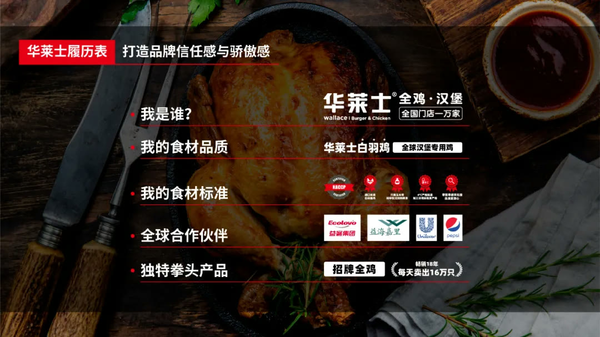
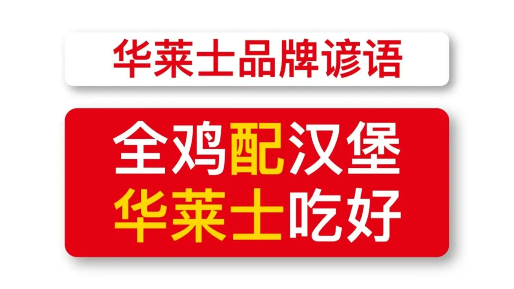
自哪里，他们都能一眼认出我们的品牌，都能够找到我们的门店，也就是要容易识别、容易记忆、容易传播！所以我们从华莱士的英文名 Wallace 中选择了首字母的“ W ”，这个全世界人都不会认错的图形作为超级符号的原型，并且基于“全鸡”的品类策略，我们选择了一只气宇轩昂、有着黄色鸡冠的公鸡来进行 W 的私有化。
▲华莱士新旧 LOGO 对比
华莱士超级符号的全面媒体化全面媒体化是基于超级符号来打造品牌体验系统（符号系统），让店内自媒体的制作成本，转化为广告投资。
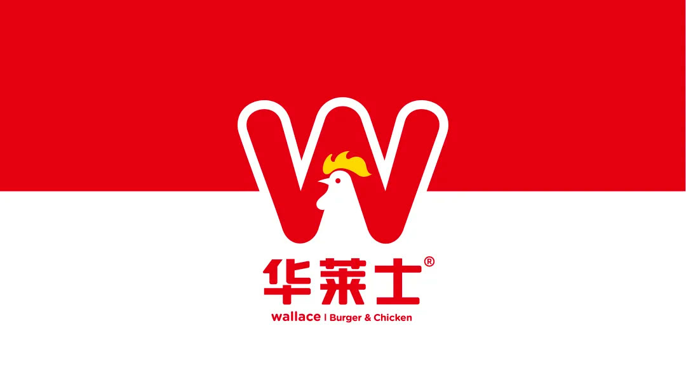
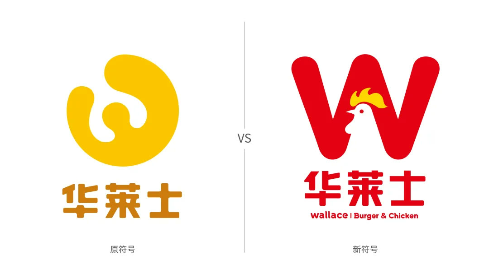
虽然我们践行的是“低价策略”，但是在品牌形象上咱们不能“低”，至少也要和麦当劳一样大牌。
最终这所有的策略都落实成一家店，通过新的门店系统来重塑品牌，建立品牌的价值感和信任感、降低顾客的选择成本。
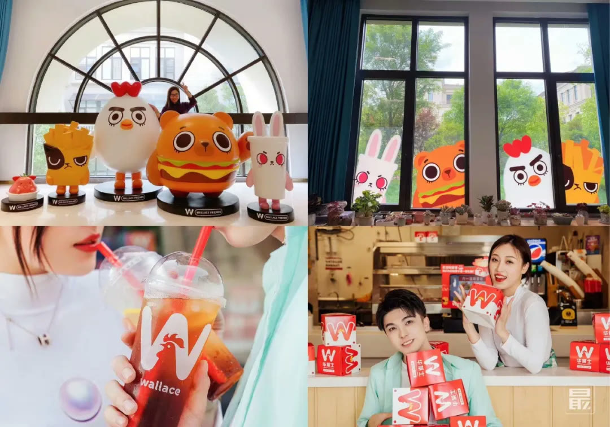
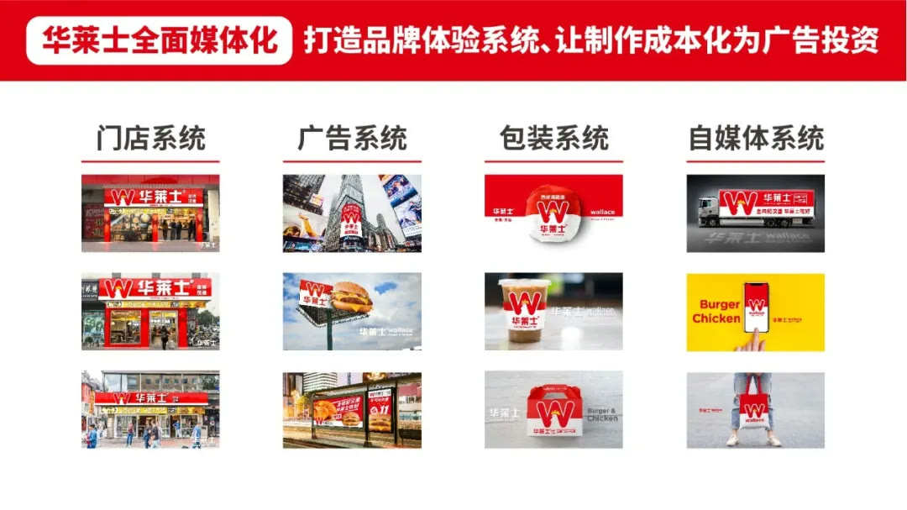
目前华莱士全国已经有 3000 家门店的店招换上了全新的超级符号，全国 15000 家门店均已开始使用全新的符号系统和包装系统，欢迎大家就近选择门店体验，记得“全鸡配汉堡，华莱士吃好”！
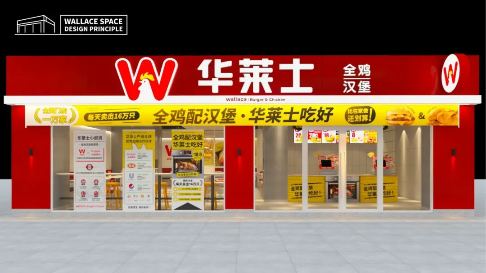
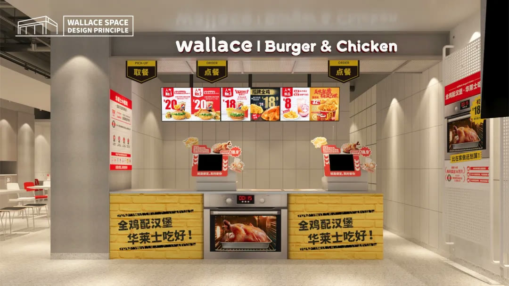
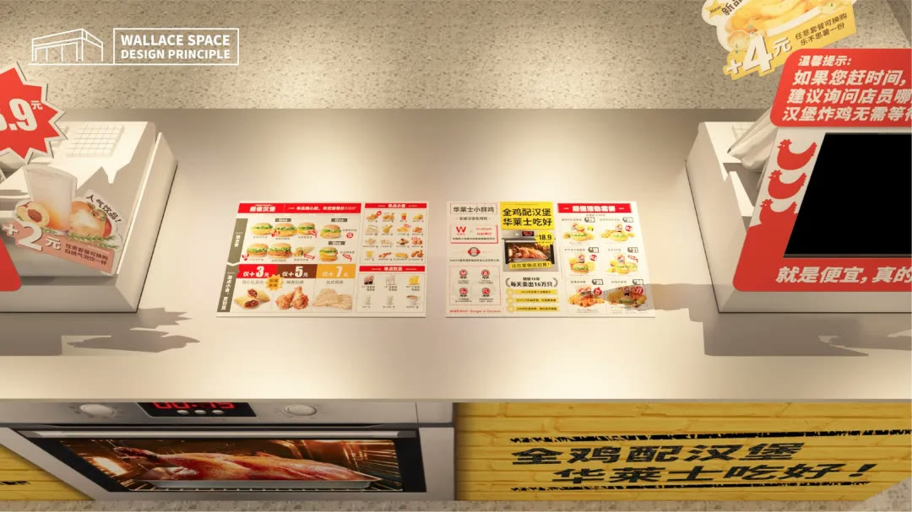
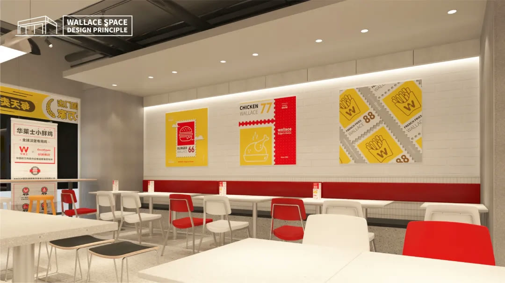
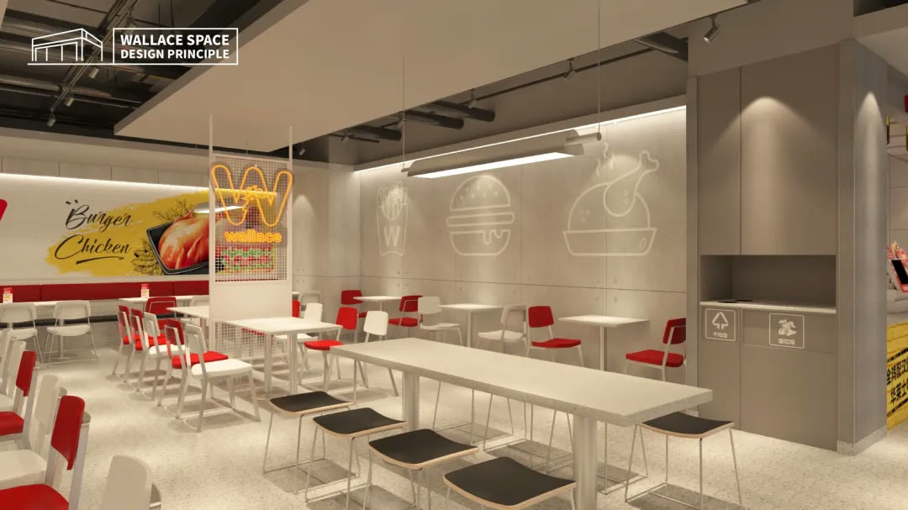
本文总结以上是华与华华莱士项目组与华莱士第一年合作中的部分咨询成果，在整个第一年的合作过程中我们与客户一起推进实现了品牌战略、营销推广、包装物料、门店设计、经营持续改善等一系列品牌战略工作的落地，体现了华与华战略创意一体化、所有的事都是一件事的工作理念。